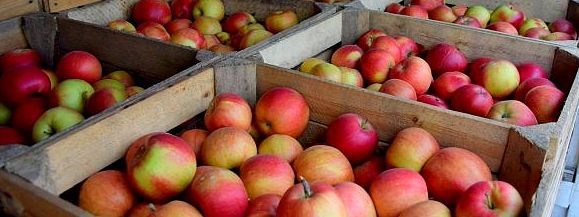

Ważniejsze obiekty w miejscowości Batorz:
- Muzeum wsi w Batorzu działające od 9 stycznia 2006 roku.
- Budynek Zespołu Szkół w Batorzu od 2 czerwca 1918r.
- Ośrodek Narciarski Wotex w Batorzu 2005r.
- Gminny Ośrodek Kultury w Batorzu od 1928r.
- Publiczna Biblioteka Gminna w Batorzu
- Publiczny Ośrodek Zdrowia w Batorzu
- Urząd Pocztowy w Batorzu
- Bank Spółdzielczy w Batorzu
- Kościół św. Stanisława Biskupa i Męczennika w Batorzu od 1882-1884r.
- Ochotnicza Straż Pożarna w Batorzu
- Budynek Urzędu Gminy w Batorzu
Dochody Gminy
Suma dochodów do budżetu gminy Batorz wyniosła w 2019 roku 15,7 mln złotych,
co daje 4,8 tys złotych w przeliczeniu na jednego mieszkańca.
Oznacza to wzrost dochodów o 2.2% w porównaniu do roku 2018.
Największa część dochodów wygenerował Dział 758 - Różne rozliczenia (37.1%).
Duża część wpływów pochodzi z Dział 756 - Dochody od osób prawnych,
fizycznych i od innych jednostek (17.5%) oraz z Dział 900 -
Gospodarka komunalna i ochrona środowiska (4.7%).
W budżecie gminy Batorz wpływy z tytułu podatku dochodowego od osób
fizycznych wynosiły 513 złotych na mieszkańca (10,8%), natomiast dochód
z tytułu podatków dochodowych od osób prawnych wynosił 1,1 złotych na mieszkańca (0,0%).
Wydatki Gminy
Suma wydatków z budżetu gminy Batorz wyniosła w 2019 roku 14,6 mln złotych,
co daje 4,4 tys złotych w przeliczeniu na jednego mieszkańca.
Oznacza to spadek wydatków o 11.6% w porównaniu do roku 2018.
Największa część budżetu gminy Batorz - 30.9% została przeznaczona na Dział 801
- Oświata i wychowanie. Dużą część wydatków z budżetu przeznaczona
została na Dział 750 - Administracja publiczna (18.2%) oraz na
Dział 600 - Transport i łączność (4.3%). Wydatki inwestycyjne
stanowiły 741,3 tys złotych, czyli 5,1% wydatków ogółem.
Rolnictwo całego województwa
Lubelskie należy do regionów charakteryzujących się znaczącą rolą sektora rolniczego. O dogodnych warunkach do prowadzenia działalności rolniczej (głównie produkcji roślinnej) decydują przede wszystkim korzystne czynniki glebowo-klimatyczne, duży udział użytków rolnych (1413 tys. ha) oraz najwyższy w Polsce udział UR w powierzchni ogólnej (70%).
Pierwsze miejsce zapewniają nam wysokie zbiory owoców z krzewów i plantacji jagodowych, które w 2018 r. wyniosły 241 tys. t (41,7% zbiorów krajowych). Województwo jest największym w Polsce producentem m.in. malin (77% krajowej produkcji), porzeczek ogółem (46%), agrestu (40%) oraz leszczyny (38%). W Lubelskiem produkuje się też najwięcej w kraju roślin strączkowych jadalnych (60,2 tys. t), głównie fasoli i grochu. Stąd pochodzi aż 43,6% krajowych zbiorów tych roślin.
Nasz region zalicza się również elity największych producentów rzepaku i rzepiku, których w 2018 r. dostarczyliśmy na rynek 336 tys. t, czyli 15,3% krajowej produkcji (drugie miejsce w Polsce) oraz owoców z drzew (trzecie miejsce w Polsce). W 2018 r. sadownicy z regionu lubelskiego zebrali 648 tys. t tych owoców (13,2% zbiorów krajowych). W zdecydowanej większości (90%) były to jabłka.
Jesteśmy również jednym z największych dostawców zbóż (11,4% produkcji krajowej), buraków cukrowych (16,9%), warzyw gruntowych (10,7%) oraz ziemniaków (6,1%).
